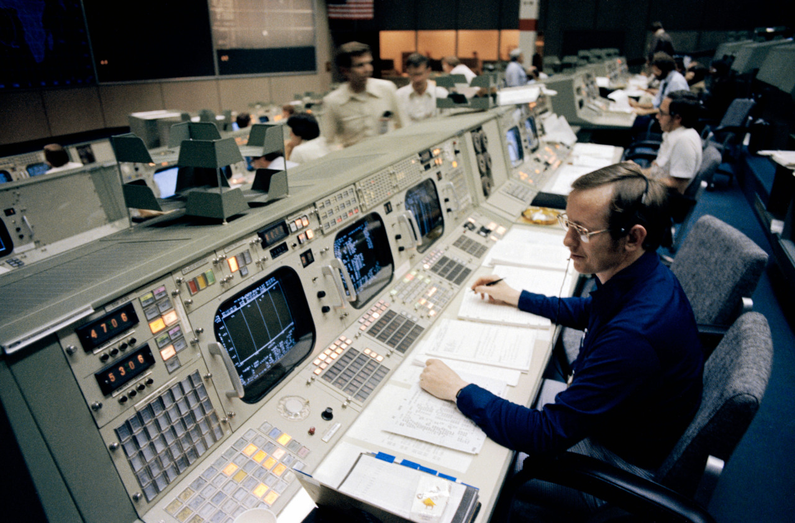

S79-30442 (29 March 1979) — Granvil A. (Al) Pennington studies the monitor on his console – the instrumentation/ communications officer (INCO) position – during simulations in the mission operations control room of the mission control center. The simulations are in preparation for STS-1, the first of a series of orbital fight test (OFT) in the space shuttle orbiter 102 Columbia.
Photo credit: NASA